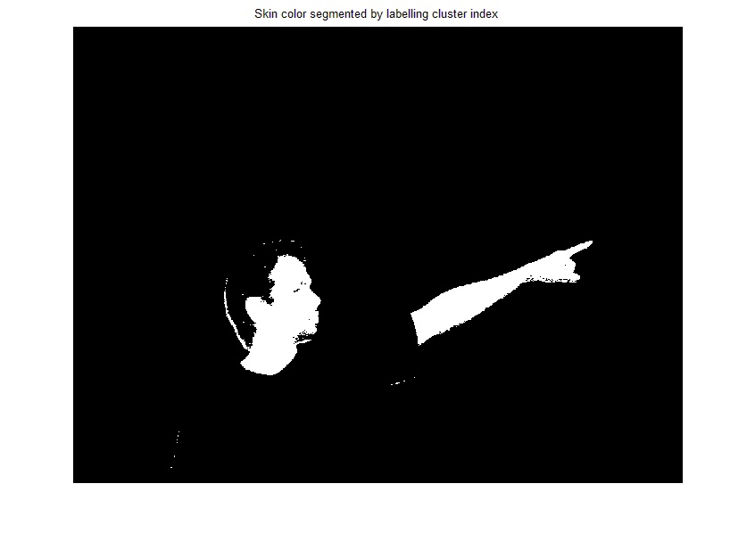

Shankar Jagadeesan
Teaching machines to see and respond

Skin Color Segmentation using K means clustering
The project was done as a sub module in identifying the pointing gestures of humans. The work is still in progress. I take a RGB image as an input and convert it to LUV color space. I have coded a separate matlab function for converting various color space models into one another. I use that function here for the conversion.
I separate the chrominance values of the image namely U and V. The 2D UV values histogram is made and standard skin color is determined. Each picel UV value is converted to a color distance from standard skin color. A histogram of color distance is made and I extract the skin region by doing K means clustering. The project was implemented using MATLAB.
| Input image | Luminance and Chrominace values |
{kind=link}
{kind=link}
Clustered Pixels in Images
The images shown below indicate the pixels in two different clusters
 | |
| Pixels in Cluster 1 | Pixels in Cluster 2 |
{kind=link}
Output
By doing K menas clustering i obtain the skin region. Hence anything that i need to detect in my face and hands, I will search in these regions only
|  | |
| Two Clusters in Red & Blue | Output |
{kind=link}
{kind=link}